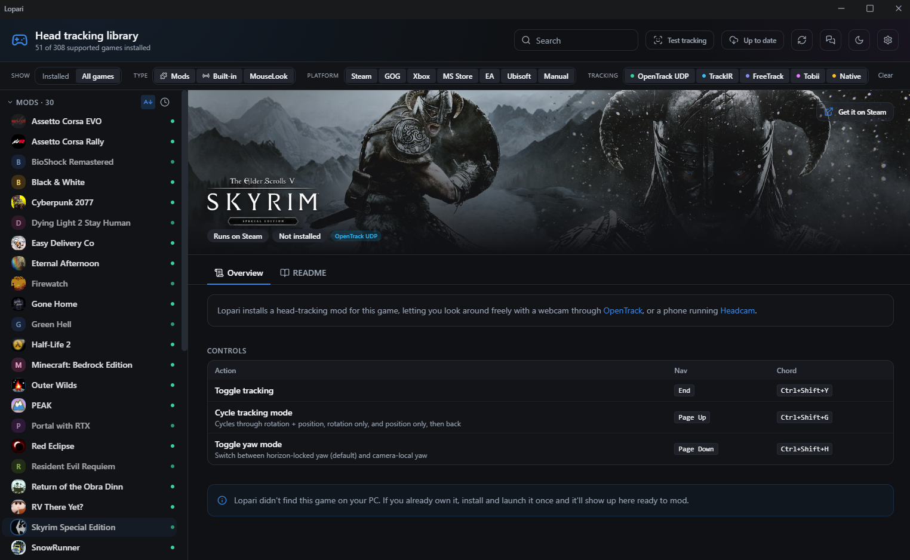

Immersive flatscreen gaming
Lopari surfaces games on your PC which support head tracking, either natively or via unofficial mods, and loads them in one click.
Windows 10 & 11 · No headset · No account · No telemetry
Verify your download (SHA256)
Optional. Confirm the installer matches what CI built:
Get-FileHash .\Lopari_0.8.1_x64-setup.exe -Algorithm SHA256Expected digest for this release:
e4c35763a89f9e93c17691004181b3b7af834175a541b68fea703dab5a904b85

It finds your games
Every installed game that supports head tracking, natively or through an unofficial mod.
You launch in one click
Hit play. Lopari adds the mod if a game needs one, and takes it back out when you want vanilla.
You already own a tracker
Your webcam or phone can be used as a tracker. No headset, nothing to buy. TrackIR and Tobii work too, if you have one.